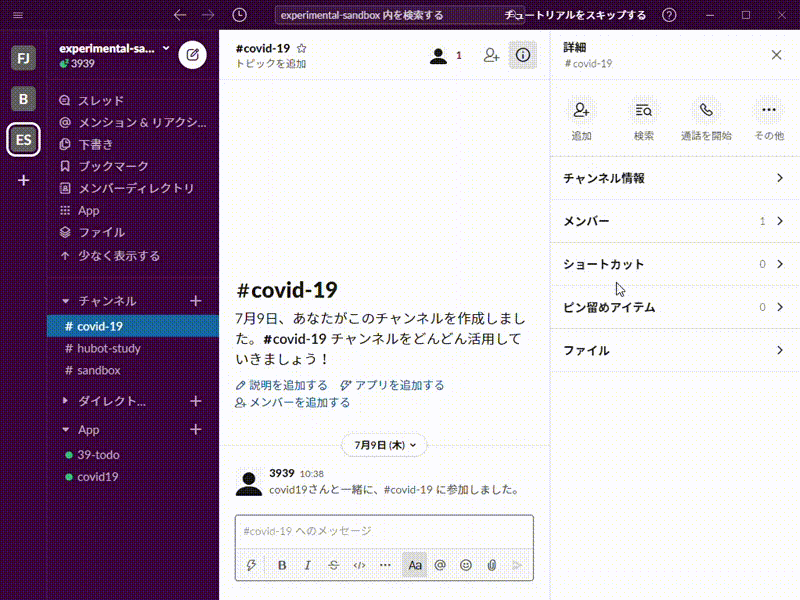

最近新型コロナウイルスが流行しているということもあり、COVID-19に関する情報を取得してくれる対話式のチャットボットを作りました。
このボットは「Slack」といわれるチャットツールにて動作させることが出来ます。
感染者数データは
COVID-19 Japan
より拝借しました。
「covid19」の後に続くコマンドを打つことで情報を取得出来ます。
現時点では全国の感染者数、都道府県別の感染者数の取得に対応しています。
covid19 - covid19の使用方法を表示
covid19 全国 - 全国の感染者数を表示
covid19 (都道府県名) - 指定した都道府県の累計陽性者数を表示
